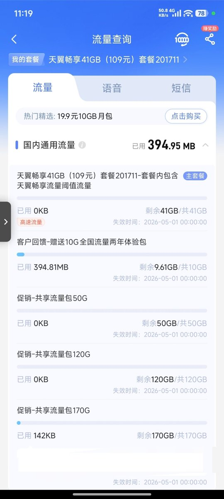
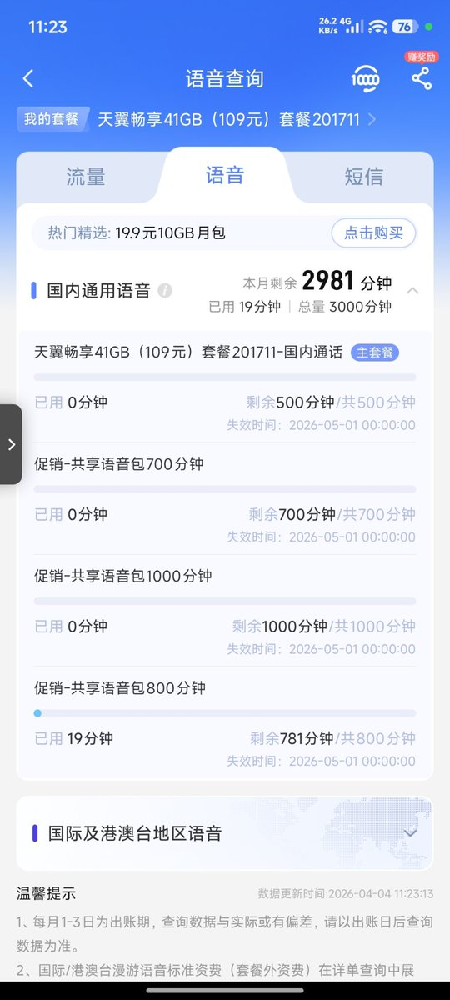

虽然有双不限，VVIP、QCI6、5G-A（2/3Gbps速率），但农村的基站一向垃圾，跑不动。这不老家两栋小土房装修完打算装宽带，于是找了师兄整了个29月租的本地号卡，顺带解决了宽带需求
除了每月391G流量限速不限量，再加上3000分钟主叫和两条千兆宽带，给了300调试费上门装宽带，最后改桥接、找了电信客服要了公网IPv4，不过中国电信抠门只给了50Mbps上行。可惜没有小城市家宽没有一个月50块钱的CN2精品网包，到香港都得绕美，只好再拉条移动单宽出墙用
另外可以给免费加副卡，最多可以开4张，有需要可以去营业厅加办。毕竟给父母用的，就加了一张刚好够两人，促销的流量包有效期是2年，看了下入网协议双方无异议自动续约，我自己感觉挺值的
除了每月391G流量限速不限量，再加上3000分钟主叫和两条千兆宽带，给了300调试费上门装宽带，最后改桥接、找了电信客服要了公网IPv4，不过中国电信抠门只给了50Mbps上行。可惜没有小城市家宽没有一个月50块钱的CN2精品网包，到香港都得绕美，只好再拉条移动单宽出墙用
另外可以给免费加副卡，最多可以开4张，有需要可以去营业厅加办。毕竟给父母用的，就加了一张刚好够两人，促销的流量包有效期是2年，看了下入网协议双方无异议自动续约，我自己感觉挺值的

